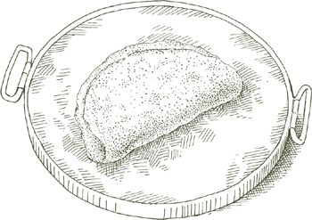

ПРЕЖДЕ ЧЕМ ПОЯВИЛАСЬ печь, был хлеб. Его пекли в очаге, где тесто раскатывали на каменной плите и накрывали горячими углями. Из этого очага хлеб —panis focacius (focus по-латински означает очаг) — стал основой для сегодняшней мягкой, заквашенной фокаччи.
Фокачча всегда начинается с теста, обогащенного оливковым маслом и солью, которое можно выпекать как простым, так и с добавлением лука, розмарина, шалфея, оливок, панчетты и других приправ. Фокачча наиболее тесно связана с Лигурией, Итальянской Ривьерой, и с её главным городом, Генуей. На самом деле, во многих городах на севере её вообще не называют фокачча, а пицца геновезе, пицца в генуэзском стиле. В Болонье, однако, если вы ищете фокаччу, правильное слово для использования — кресентину; в Флоренции, Риме и нескольких других частях центральной Италии это шкьячата. Если вы попросите фокаччу в Болонье или Венеции, вам предложат очень сладкий панеттоне-подобный торт, усыпанный засахаренными фруктами и изюмом.
ТЕСТО в данном рецепте дает толстую, нежную фокаччу с хрустящей корочкой, которую вы можете украсить обжаренным луком в генуэзском стиле, как описано ниже, или изменить одним из альтернативных способов, указанных, или придумать подходящий вариант самостоятельно.
На 6 порций
ДЛЯ ТЕСТА
1 пакет активных сухих дрожжей
2 чашки теплой воды
6½ чашки муки без отбеливания
2 столовые ложки оливкового масла
1 столовая ложка соли
Прочная прямоугольная металлическая форма для выпечки, предпочтительно черная, размером примерно 18 на 14 дюймов (45 на 35 см) или эквивалент
Оливковое масло для смазывания формы
Камень для выпечки
Смесь из ¼ чашки оливкового масла, 2 столовых ложек воды и 1 чайной ложки соли
Кулинарная кисть
Для луковой начинки
2 столовые ложки оливкового масла
4 чашки лука, нарезанного очень-очень тонко
1. Растворите дрожжи, размешав их в ½ чашке теплой воды, и дайте постоять около 10 минут или немного меньше.
2. Смешайте дрожжи и 1 чашку муки в миске, тщательно перемешивая. Затем добавьте 2 столовые ложки оливкового масла, 1 столовую ложку соли, ¾ чашки воды и половину оставшейся муки. Хорошо перемешайте, пока тесто не станет мягким, но компактным и больше не будет прилипать к рукам. Добавьте оставшуюся муку и ¼ чашки воды, и снова тщательно перемешайте. При добавлении муки и воды в последний раз отложите немного того и другого и добавляйте только столько, сколько необходимо, чтобы тесто стало управляемым, мягким, но не слишком липким. В очень влажный дождливый день, например, вам может понадобиться меньше воды и больше муки.
3. Выньте тесто из миски и несколько раз сильно хлопните им по столу, пока оно не вытянется вдоль. Достигните дальнего конца теста, сложите его немного к себе, оттолкните его ладонью, сгибая запястье, снова сложите и снова оттолкните, постепенно сворачивая его и приближая к себе. Оно должно иметь заостренную, рулетоподобную форму. Поднимите тесто, держась за один из заостренных концов, поднимите его высоко над столом и снова несколько раз сильно хлопните им по столу, вытягивая его в длину. Достигните дальнего конца и повторите движение замеса с ладонью и запястьем, снова приближая его к себе. Работайте с тестом таким образом в течение 10 минут. В конце придайте ему круглую форму.
4. Смажьте середину противня примерно 2 столовыми ложками оливкового масла, положите замешанное, округленное тесто на него, накройте влажной тканью и оставьте подниматься примерно на 1½ часа.
5. Для начинки: Положите 2 столовые ложки оливкового масла и весь нарезанный лук в сковороду, включите средний огонь и готовьте лук, часто помешивая, пока он не станет мягким, но не слишком мягким. Он должен оставаться слегка хрустящим.
6. Когда истечет указанное время подъема, вытяните тесто в форме для выпечки, распределяя его по краям так, чтобы оно покрывало всю форму на глубину примерно ¼ дюйма (0.5 см). Накройте влажным полотенцем и дайте тесту подняться в течение 45 минут.
7. За 30 минут до того, как вы будете готовы к выпечке, поместите камень для выпечки в духовку и разогрейте духовку до 230°C (450°F).
8. Когда время для второго подъема теста истечет, держа пальцы руки жесткими, проколите тесто по всей поверхности, сделав много маленьких углублений кончиками пальцев. Взбейте смесь оливкового масла, воды и соли небольшим венчиком или вилкой в течение нескольких минут, пока не получите довольно однородную эмульсию, затем медленно налейте ее на тесто, используя кисточку, чтобы равномерно распределить по краям формы. Вы заметите, что жидкость будет собираться в углублениях, сделанных вашими пальцами. Распределите обжаренный лук по тесту и поставьте форму на среднюю полку предварительно разогретой духовки. Проверьте фокаччу через 15 минут. Если вы заметите, что она готовится быстрее с одной стороны, поверните форму соответственно. Выпекайте еще 7–8 минут. Выньте фокаччу из формы с помощью лопаток и перенесите на решетку для остывания.
Подавайте фокаччу теплой или при комнатной температуре в тот же день. Предпочтительно не хранить ее дольше, но если это необходимо, лучше заморозить, чем хранить в холодильнике. Разогрейте в очень горячей духовке в течение 10–12 минут.
Примечание по кухонному комбайну  Предыдущие 2 шага можно выполнить в кухонном комбайне, но ручной метод, помимо физических удовольствий, которые он приносит, дает фокаччу с лучшей текстурой.
Предыдущие 2 шага можно выполнить в кухонном комбайне, но ручной метод, помимо физических удовольствий, которые он приносит, дает фокаччу с лучшей текстурой.
Из ингредиентов для предыдущего рецепта Фокаччи с луком уберите лук и его обжаренное масло, а также уберите соль из смеси оливкового масла и воды. Следуйте всем остальным шагам рецепта. После смазывания теста оливковым маслом и водой посыпьте его 1½ чайными ложками крупной морской соли. Выпекайте, как указано в базовом рецепте.
Из ингредиентов для рецепта Фокаччи с луком уберите лук и его обжаренное масло, а также добавьте несколько коротких веточек розмарина. Приготовьте фокаччу согласно базовому рецепту. Когда вы проверите ее готовность в духовке через 15 минут, распределите по ней маленькие веточки розмарина и завершите выпекание.
Из ингредиентов для рецепта Фокаччи с луком уберите лук и его обжаренное масло, а также добавьте 20 свежих листьев шалфея, мелко нарезанных, и несколько целых листьев. При растягивании теста в форме перед вторым подъемом, как указано в базовом рецепте, вмешайте нарезанный шалфей в тесто, распределяя его как можно равномернее. Выпекайте фокаччу согласно базовому рецепту. Когда вы проверите ее готовность через 15 минут, посыпьте ее тонким слоем свежих целых листьев шалфея и завершите выпекание.
Из ингредиентов для рецепта Фокаччи с луком уберите лук и его обжаренное масло, уменьшите соль в смеси оливкового масла и воды до ½ чайной ложки и добавьте 6 унций черных греческих оливок. Они должны быть тонкокожими круглыми, которые варьируются по цвету от темно-коричневого до черного. Не используйте фиолетовые, заостренные оливки сорта Каламата. Разрежьте оливки по окружности и освободите их от косточки, получив 2 отделенные половинки от каждой оливки. После того как вы проколите углубления в тесте в форме, как указано в базовом рецепте, вдавите оливки, разрезанной стороной вниз, в углубления, встраивая их глубоко в тесто, затем смажьте тесто смесью оливкового масла, воды и соли. Выпекайте фокаччу согласно базовому рецепту.
ТАК есть ресторан в Болонье, чьи столы на протяжении почти века всегда полны. Их секрет — это традиционная кухня, которая удовлетворяет самые традиционные вкусы, болонцев. Ресторан называется Диана, и женщины на кухне там все еще раскатывают пасту вручную с помощью длинной болонской скалки, готовя несравненные тортеллини, тальятелле и лазаньи. Пока вы ждете тортеллини, официант поставит на ваш стол тарелку с кубиками толстой мортаделлы и нарезанным пармской ветчиной, а также квадраты, вероятно, самой тонко ароматной из всех фокачч, болонской кресентинa с беконом. Следующий рецепт адаптирован от версии Дианы. Вот случай, когда я предпочитаю использовать кухонный комбайн, потому что он лучше всего нарезает бекон и равномерно распределяет его в тесте.
На 6–8 порций
¼ фунта (115 г) панчетты, предпочтительно качественной
1 ¼ чайной ложки активных сухих дрожжей
1¼ чашки теплой воды
3¼ чашки муки без отбеливания
1¼ чайной ложки соли
Щепотка сахара
Оливковое масло для смазывания миски и формы
Прямоугольная форма для выпечки размером 9 на 13 дюймов (23 на 33 см), предпочтительно черная
Кулинарная кисть
1 яйцо, слегка взбитое
1. Нарежьте панчетту на кусочки, не удаляя жир, положите в кухонный комбайн и измельчите очень мелко. Не вынимайте из чаши комбайна.
2. Растворите дрожжи, размешивая их в ¼ чашки теплой воды. Когда они полностью растворятся, через 10 минут или меньше, добавьте в чашу комбайна вместе с 1 чашкой муки, ½ чашкой теплой воды, солью и сахаром. Включите комбайн. Пока лезвие вращается, постепенно добавляйте оставшуюся муку и оставшиеся ½ чашки воды. Остановите комбайн, когда тесто соберется в комок.
3. Используйте около 1 столовой ложки оливкового масла, чтобы смазать внутреннюю часть большой миски. Положите тесто в миску, накройте пленкой и поставьте в теплое защищенное место, чтобы оно поднялось в два раза, примерно на 3 часа или немного больше.
4. Когда тесто увеличится в объеме в два раза, поставьте камень для выпечки в духовку и разогрейте духовку до 200°C (400°F).
5. Тонко смажьте дно формы для выпечки. Поместите поднявшееся тесто в центр и аккуратно распределите его пальцами к краям, пока оно полностью не покроет форму. Будьте осторожны, чтобы не образовались тонкие места, иначе они подгорят при выпечке. Накройте форму пленкой и поставьте в теплое защищенное место на 30–40 минут, пока тесто поднимется еще немного.
6. Используйте лезвие бритвы, чтобы сделать широкий ромбовидный узор на поверхности теста, затем смажьте его взбитым яйцом. Не пытайтесь использовать все яйцо. Поместите форму на разогретый камень для выпечки и выпекайте в течение 30 минут, пока тесто не станет глубокого золотистого цвета сверху. Выньте форму и выключите духовку, но оставьте дверь закрытой. Освободите фокаччу от дна формы с помощью длинной металлической лопатки, поднимите ее из формы и переместите на камень для выпечки в духовке. Выньте фокаччу через 5 минут и положите на решетку для остывания. Подавайте теплой или при комнатной температуре.
РЕЦЕПТЫ для теста для пиццы неисчислимы. Хотя некоторые формулы определенно лучше других, ни одна не может с уверенностью претендовать на звание идеальной. Важно знать, что именно вы ищете. Я предпочитаю пиццу, которая не слишком хрупкая и тонкая, но и не слишком толстая и пористая, с плотной, жевательной текстурой и хрустящей корочкой. Тесто, которое наилучшим образом соответствует моим ожиданиям, — это тесто с одним подъемом, представленное ниже. Мне никогда не удавалось добиться желаемой текстуры от пиццы, выпеченной в формах, поэтому я предпочитаю готовить ее непосредственно на камне для выпечки.
Для 2 круглых пицц, примерно 30 см в диаметре, в зависимости от того, насколько тонкими вы их сделаете
1½ чайной ложки активных сухих дрожжей
1 чашка теплой воды
3½ чашки муки без отбеливания
Оливковое масло первого холодного отжима, 1 столовая ложка для теста, 1 чайная ложка для миски и немного для готовой пиццы
½ столовой ложки соли
Камень для выпечки
Лопата пекаря (паддл)
Кукурузная мука
1. Полностью растворите дрожжи в большой миске, размешав их в ½ чашки теплой воды. Когда они растворятся, через 10 минут или меньше добавьте 1 чашку муки и тщательно перемешайте деревянной ложкой. Затем, продолжая мешать, постепенно добавляйте 1 столовую ложку оливкового масла, ½ столовой ложки соли, ¼ чашки теплой воды и еще 1 чашку муки. Когда будете добавлять муку и воду в последний раз, отложите немного и добавьте только столько, сколько нужно, чтобы тесто стало управляемым, мягким, но не слишком липким.
2. Выньте тесто из миски и несколько раз сильно хлопните им о рабочую поверхность, пока оно не растянется до длины примерно 25 см. Достигнув дальнего конца теста, сложите его немного к себе, оттолкните его ладонью, сгибая запястье, снова сложите и снова оттолкните, постепенно сворачивая его и приближая к себе. Поверните тесто на четверть оборота, поднимите его и хлопните снова, повторяя всю предыдущую операцию. Дайте ему еще один поворот на четверть в том же направлении и повторите процедуру в течение примерно 10 минут. Сформируйте вымесенное тесто в круглую форму.
3. Смазывайте внутреннюю часть чистой миски 1 чайной ложкой оливкового масла, положите туда тесто, накройте пленкой и поставьте миску в защищенное теплое место. Дайте тесту подняться, пока оно не удвоится в объеме, примерно 3 часа. Оно также может постоять немного дольше.
4. За 30 минут до того, как вы будете готовы к выпечке, поместите камень для выпечки в духовку и разогрейте духовку до 230°C (450°F).
5. Щедро посыпьте лопату пекаря кукурузной мукой. Выньте поднявшееся тесто из миски и разделите его пополам. Если оба ваши лопата и камень для выпечки не могут вместить две пиццы одновременно, положите одну из половинок обратно в миску и накройте ее, пока раскатываете другую половину. Положите эту половину на лопату и раскатайте ее как можно тоньше, формируя круглую форму, используя скалку, но заканчивая работу пальцами. Оставьте край немного выше, чем остальная часть. Альтернативный метод — и лучший способ раскатать тесто, если вы сможете его воспроизвести, — это техника пиццайоло. Сначала раскатайте тесто в толстый диск. Затем растяните тесто, вращая его на поднятых кулаках, подбрасывая его время от времени в воздух, чтобы перевернуть. Когда оно примет желаемую форму, положите круг теста на лопату, посыпанную кукурузной мукой.
6. Положите начинку по вашему выбору на тесто и быстро сдвиньте его, резко дернув лопату, на разогретый камень для выпечки. Выпекайте в течение 20 минут или немного дольше, пока тесто не станет светло-золотистым. Как только оно будет готово, слегка сбрызните оливковым маслом. (Пока первая пицца выпекается, следуйте той же процедуре для раскатки оставшегося теста и его начинки, помещая его в духовку, когда первая пицца будет готова.)
Примечание к кухонному комбайну Предыдущие два шага могут быть выполнены в кухонном комбайне. Имейте в виду, что ручной метод дает лучшее тесто, что он не занимает значительно больше времени, чем использование и очистка комбайна, и может быть более приятным.

ПИЦЦА СДЕЛАНА для импровизации и не терпит догм о своих начинках. По всей Италии и миру армии пиццайоли — пекарей пиццы — каждый день создают новые комбинации, используя грибы, лук, перец чили, экзотические овощи и фрукты, ветчину, колбасы, сыры, морепродукты — все, что оказывается в пределах их досягаемости. Однако некоторые ингредиенты менее совместимы, чем другие, и некоторые, такие как козий сыр, например, создают вкус, который совершенно не соответствует итальянским представлениям о вкусе. Не подавляя спонтанность, может быть полезно, когда вы хотите приготовить пиццу в идиоматическом итальянском стиле, время от времени обращаться к тем немногим сочетаниям ингредиентов, которые представляют, в месте, где было создано блюдо, самый широкий и давно установленный консенсус о том, что лучше всего подходит для пиццы.
Хотя некоторые историки еды, как это обычно бывает с историками, оспаривают это, считается, что эта самая популярная из всех начинок была создана, чтобы угодить королеве Италии Маргарите, когда она посетила Неаполь в конце девятнадцатого века. Цвета — томатный красный, моцарелла белый и базилик зеленый — очевидно, патриотичные цвета тогда еще новой итальянской флага. Кстати, супруг Маргариты, Умберто I, кажется, был единственным правителем среди сотен в почти трехтысячелетней истории полуострова, чье имя было украшено суффиксом «Добрый». Без каких-либо оговорок, это можно прикрепить к начинке, которая носит имя его королевы.
Начинка для 2 двенадцатидюймовых пицц, сделанных из этого теста
ПОМИДОРЫ
1½ фунта свежих, спелых, твердых сливовидных помидоров (см. примечание ниже) ИЛИ 1½ чашки консервированных импортных итальянских сливовидных помидоров, слитых и нарезанных
2 столовые ложки оливкового масла первого холодного отжима
Примечание Аутентичный вкус неаполитанской пиццы во многом обязателен очень спелым, твердым, свежим сливовидным помидорам Сан-Марцано, которые идут в начинку сырыми. В короткий сезон, когда доступны местные помидоры исключительной спелости и твердости, пропустите предварительную кулинарную процедуру, описанную в шагах 1 и 2 ниже, и используйте их следующим образом:
Очистите помидоры сырыми с помощью ножа с поворотным лезвием, нарежьте их на полоски шириной ½ дюйма, выбрасывая все семена и любые жидкие части, и распределите их как есть по тесту для пиццы, когда будете готовы к начинке и выпеканию.
Когда вы работаете с помидорами, которые не совсем соответствуют этому описанию, быстро их приготовьте, следуя приведенным ниже инструкциям.
1. Если используете свежие помидоры, промойте их в холодной воде, очистите сырыми с помощью ножа, нарежьте на 4 части каждый и выбросьте все семена и любые жидкие части. Если используете нарезанные консервированные помидоры, переходите к следующему шагу.
2. Положите помидоры в среднюю сковороду с оливковым маслом, накройте сковороду крышкой и включите средний огонь. Через 2–3 минуты снимите крышку и готовьте еще 6–7 минут, часто помешивая, пока помидоры не потеряют всю свою водянистую жидкость.
МОЦАРЕЛЛА
½ фунта (225 г) моцареллы, предпочтительно импортной моцареллы из буйволиного молока
ПО ЖЕЛАНИЮ: в зависимости от моцареллы, 1 столовая ложка оливкового масла первого холодного отжима
Если вы используете моцареллу из буйволиного молока, которая имеет очень высокий процент сливок, или качественную, влажную, местного производства свежую моцареллу, исключите оливковое масло и нарежьте сыр как можно тоньше.
Если вы используете коммерческую моцареллу из супермаркета, натрите её на крупной терке или с помощью насадки для шинковки в кухонном комбайне. Положите в миску с оливковым маслом, тщательно перемешайте и дайте настояться 1 час перед использованием в начинке.
ДРУГИЕ ИНГРЕДИЕНТЫ
Соль
3 столовые ложки оливкового масла первого холодного отжима
2 столовые ложки свеженатертого пармиджано-реджано сыра
14 свежих листьев базилика
1. Нанесение начинки: Если вы используете эту начинку для 2 пицц, разделите все ингредиенты на две равные части и используйте одну часть, следуя инструкциям ниже, для покрытия теста, которое собираетесь поставить в духовку.
2. Равномерно распределите помидоры сверху, посыпьте немного солью и сбрызните оливковым маслом. Поместите тесто в духовку и выпекайте в течение 15 минут.
3. Используйте 2 металлические лопатки, по одной в каждой руке, чтобы вынуть тесто из духовки, быстро накройте томаты моцареллой и тертым пармезаном, в таком порядке, затем верните в духовку.
4. Через 5 минут, когда сыр расплавится, выньте пиццу, сбрызните немного оливковым маслом, как описано в Шаге 6 основного рецепта пиццы, и распределите листья базилика сверху. Подавайте сразу.
Орегано так часто заменяет базилик в начинке для Маргариты, что его резкий и волнующий аромат стал ассоциироваться с самой пиццей. Используйте свежий орегано, если это возможно, 1 чайную ложку, или ½ чайной ложки, если сушеный. Посыпьте его на частично испеченную пиццу одновременно с добавлением моцареллы и тертого пармезана. Уберите базилик.
Маринара означает «по-морскому». Это обозначает, что готовится так, как это делали на корабле, поэтому «да» оливковому маслу и чесноку, но «нет» сыру, который был бы несовместим с свежими продуктами, наиболее доступными на море, рыбой. Маринара — это самая традиционная из всех начинок для пиццы, и когда помидоры спелые и мясистые, чеснок свежий и сладкий, а оливковое масло густое и фруктовое, её, вероятно, невозможно превзойти.
Начинка для 2 пицц диаметром 30 см, сделанных из этого теста
2 фунта (900 г) свежих, спелых, плотных сливовых помидоров (см. замечание) ИЛИ 3 чашки консервированных импортных итальянских сливовых помидоров, слитых и нарезанных
Оливковое масло первого холодного отжима, 3 столовые ложки для помидоров плюс еще для пиццы
Соль
6 зубчиков чеснока, очищенных и нарезанных очень тонко
Орегано, 1 чайная ложка, если свежий, ½ чайной ложки, если сушеный
1. Подготовьте помидоры, следуя инструкциям в рецепте начинки для Маргариты.
2. Если вы используете эту начинку для 2 пицц, разделите все ингредиенты на две равные части и используйте одну часть, следуя инструкциям ниже, чтобы покрыть тесто, которое собирается в духовку.
3. Равномерно распределите помидоры по верхней части, посыпьте немного солью, добавьте нарезанный чеснок и щедро сбрызните оливковым маслом. Поместите тесто в духовку и выпекайте до готовности, как описано. Когда вы достанете пиццу, сбрызните немного оливковым маслом и посыпьте орегано сверху. Подавайте сразу.
Пицца, покрытая таким образом, без помидоров, называется пицца бианка, белая пицца. В Неаполе её дополнительно квалифицируют как алла романа, римский стиль, из-за анчоусов, тогда как, в парадоксальном итальянском стиле, в Риме и повсюду в стране, её называют алла неаполетана, неаполитанский стиль.
Начинка для 2 пицц диаметром 30 см, сделанных из этого теста
1 фунт (450 г) моцареллы, предпочтительно импортной моцареллы из молока буйволиц
Оливковое масло первого холодного отжима, 2 столовые ложки по желанию, в зависимости от моцареллы, плюс 2 столовые ложки для пиццы
4 филе анчоусов (предпочтительно приготовленные дома как описано), нарезанные не слишком мелко
½ чашки свежих листьев базилика, torn на 2 или 3 части
2 столовые ложки свеженатертого parmigiano-reggiano сыра
Соль
1. Ознакомьтесь с комментариями о моцарелле в рецепте начинки для Маргариты и следуйте инструкциям там для ее приготовления, используя оливковое масло по желанию, если это уместно.
2. Если вы натерли моцареллу, смешайте нарезанные анчоусы с ней; если вы нарезали ее ломтиками, оставьте анчоусы отдельно. Если вы используете эту начинку для 2 пицц, разделите все ингредиенты на две равные части и используйте одну часть, следуя инструкциям ниже, чтобы украсить тесто, которое собирается в духовку.
3. Укройте тесто половиной моцареллы и анчоусов, которые вы отложили для одной пиццы. Поместите тесто в духовку и выпекайте в течение 15 минут.
4. Достаньте тесто из духовки, быстро укройте оставшейся моцареллой и анчоусами, добавьте базилик, тертый пармезан, 1 столовую ложку оливкового масла, щепотку или две соли и верните в духовку.
5. Через примерно 5 минут, когда сыр расплавится, достаньте пиццу, сбрызните немного оливковым маслом, как описано в Шаге 6 основного рецепта пиццы, и подавайте немедленно.


Сфинчуну для Палермо то же, что и пицца для Неаполя и остального мира. Грубая версия сфинчуну по внешнему виду не отличима от пиццы, это слой запеченного теста, поддерживающий начинку. Более тонкая и более интересная версия известна как сфинчуну ди Сан Вито, в честь монахинь этого ордена, которые, как считается, создали ее. У нее два тонких, круглых слоя плотного теста, которые обрамляют начинку — называемую конза — которая запечатана по краям. Сан Вито конза содержит мясо и сыр, но также можно сделать отличные начинки с овощами вместо мяса.
Тесто для тонкой двусторонней сфинчуну диаметром 10–12 дюймов (25–30 см)
ТЕСТО ДЛЯ СФИНЧУНУ
1 чайная ложка активных сухих дрожжей
¾ чашки теплой воды
2 чашки (около 250 г) муки без добавления отбеливателя
Щепотка сахара
1 чайная ложка соли
Оливковое масло первого холодного отжима, 1 столовая ложка для теста и немного для миски
2 столовые ложки цельного молока
1. Полностью растворите дрожжи в большой миске, размешав их в ¼ чашки теплой воды. Когда дрожжи растворятся, через 10 минут или меньше, добавьте 1 чашку муки и тщательно перемешайте деревянной ложкой. Затем, продолжая мешать, добавьте ¼ чашки теплой воды, щепотку сахара, 1 чайную ложку соли, 1 столовую ложку оливкового масла и 2 столовые ложки молока. Когда все ингредиенты будут хорошо смешаны, добавьте ¼ чашки теплой воды и оставшуюся 1 чашку муки, и снова тщательно перемешайте, пока тесто не станет мягким, но упругим, и больше не будет прилипать к рукам.
2. Выньте тесто из миски и несколько раз сильно ударьте его о рабочую поверхность, пока оно не примет длинную и узкую форму. Достигнув дальнего конца теста, сложите его немного к себе, оттолкните его основанием ладони, сгибая запястье, снова сложите и снова оттолкните, постепенно сворачивая его и приближая к себе. Поверните тесто на четверть оборота, поднимите его и снова сильно ударьте о поверхность, повторяя всю предыдущую операцию. Поверните еще на четверть оборота в том же направлении и повторяйте процедуру около 10 минут. Сформируйте замешанное тесто в круглую форму.
3. Смажьте внутреннюю часть чистой миски 1 чайной ложкой оливкового масла, положите туда тесто, накройте пленкой и поставьте миску в защищенное теплое место. Дайте тесту подняться, пока оно не удвоится в объеме, примерно 3 часа. Пока тесто поднимается, вы можете приготовить концу.
Примечание по кухонному комбайну Предыдущие два шага можно выполнить в кухонном комбайне.
КОНЦА ДИ САН ВИТО—НАЧИНКА ИЗ МЯСА И СЫРА
3 столовые ложки оливкового масла первого холодного отжима
½ чашки (около 75 г) лука, нарезанного очень тонко
½ фунта (около 225 г) говяжьего фарша, предпочтительно из лопатки
Соль
Черный перец, свежемолотый
½ чашки (около 120 мл) сухого белого вина
⅓ чашки (около 80 г) вареной не копченой ветчины, нарезанной довольно крупно
½ чашки импортного итальянского fontina, нарезанного очень мелко
¼ чашки свежего ricotta
Примечание Примо сале и свежие сыры качиокавалло из Палермо, которые являются частью этой начинки, на данный момент, пока я пишу, недоступны за пределами Сицилии. Я заменил их комбинацией fontina и ricotta, чтобы достичь мягкого вкуса с кислым акцентом. Я думаю, это работает, но если у вас есть другие идеи, попробуйте их.
1. Положите оливковое масло и лук в сковороду и включите средний огонь. Помешивайте время от времени и готовьте, пока лук не приобретет глубокий золотисто-коричневый цвет. Добавьте говяжий фарш, соль и несколько щепоток перца. Разомните мясо вилкой и готовьте, часто помешивая, пока оно не потеряет свой сырой красный цвет.
2. Добавьте вино, немного уменьшите огонь и продолжайте готовить, пока вся жидкость не выпарится. Переложите содержимое сковороды в миску и отложите в сторону, чтобы остыло.
3. Когда остынет, добавьте в миску ветчину, fontina и ricotta и тщательно перемешайте, пока все ингредиенты не будут равномерно объединены.
СБОРКА И ВЫПЕЧКА СФИНЧУНИ
Камень для выпечки Мука из кукурузы
Лопата для выпечки (педаль)
2 столовые ложки обычных, безвкусных панировочных сухарей, слегка поджаренных
1 столовая ложка оливкового масла первого холодного отжима
Кулинарная кисть
1. За 30 минут до того, как вы будете готовы к выпечке—тесто должно подниматься около 2½ часов—положите камень для выпечки в духовку и разогрейте духовку до 200°C (400°F).
2. Посыпьте мукой из кукурузы лопату для выпечки.
3. Когда тесто увеличится в объеме вдвое, разделите его пополам. Оберните одну половину в пленку, а другую положите на лопату. Используйте скалку, чтобы раскатать его в круг диаметром не менее 25 см. Край не должен быть толще остальной части диска.
4. Распределите 1 столовую ложку панировочных сухарей по тесту и 1 чайную ложку оливкового масла, оставляя около 1.25 см до края. Распределите мясную и сырную conza по тесту, снова оставляя отступ от края, и посыпьте начинку 1 столовой ложкой панировочных сухарей и 2 чайными ложками оливкового масла.
5. Разверните оставшееся тесто, положите его на слегка присыпанную мукой рабочую поверхность и раскатайте в диск, достаточно большой, чтобы покрыть первый. Поместите его на начинку и плотно защипните края двух кругов теста вместе, поднимая край нижнего круга над верхним.
6. Смажьте верх теста водой, затем соскользните sfinciuni с лопаты на предварительно разогретый камень для выпечки. Выпекайте в течение 25 минут. После того как вы достанете его из духовки, дайте ему отдохнуть в течение 30 минут, чтобы вкусы начинки успели соединиться и развиться. Нарежьте на кусочки в форме пирога и подавайте.

Sfinciuni особенно хороши с овощами в conza, или начинке. Ниже описаны несколько особенно удачных сочетаний. Все они должны быть приготовлены заранее, что вы должны запланировать на время, пока тесто поднимается, в течение 3 часов.
Начинка для 1 sfinciuni диаметром 25–30 см
1 фунт (450 г) свежих, спелых, плотных сливовых томатов ИЛИ 1½ чашки консервированных импортных итальянских сливовых томатов, слитых от сока и нарезанных
2 чашки лука, нарезанного очень тонко
3 столовые ложки оливкового масла первого холодного отжима
Соль
Черный перец, свежемолотый
6 филе анчоусов (предпочтительно приготовленных дома как описано), измельченных в пасту
Орегано, 1 чайная ложка, если свежий, ½ чайной ложки, если сушеный
ПОЗЖЕ, О SFINCIUNI
1 столовая ложка оливкового масла первого холодного отжима
¼ чашки обычных, безвкусных панировочных сухарей, слегка поджаренных
И
Тесто, приготовленное по этому рецепту
ПЛЮС
Камень для выпечки
Кукурузная мука
Лопата для пекаря
Кулинарная кисть
1. Используйте только свежие помидоры, когда они действительно спелые, сладкие и мясистые. Если они соответствуют этому описанию, промойте их в холодной воде, очистите сырыми с помощью ножа с вращающимся лезвием, выбросьте семена и всю водянистую мякоть, нарежьте их полосками шириной 1,25 см и отложите в сторону. Если используете консервированные помидоры, переходите к следующему шагу.
2. Положите лук и 3 столовые ложки оливкового масла в среднюю сковороду, включите средний огонь и готовьте лук, периодически помешивая, пока он не станет светло-золотистым. Добавьте либо полоски свежих помидоров, либо дренированные, нарезанные консервированные помидоры, соль, 2–3 щепотки перца, переверните ингредиенты 2–3 раза и увеличьте огонь до среднего. Готовьте, помешивая время от времени, пока масло не отделится от помидоров, около 15 минут.
3. Уменьшите огонь до минимума, добавьте нарезанную анчоусную пасту, перемешивайте одну минуту или чуть меньше, затем полностью выключите огонь. Добавьте орегано, перемешайте и отложите остывать.
4. За 30 минут до того, как вы будете готовы к выпечке — тесто должно было подниматься около 2,5 часов — поместите камень для выпечки в духовку и разогрейте духовку до 200°C (400°F).
5. Посыпьте кукурузной мукой лопату для пекаря, затем раскатайте тесто и соберите sfinciuni как описано, с следующими корректировками для этой начинки:
• Посыпьте 2 столовыми ложками панировочных сухарей дно круглого теста.
• Используйте шумовку или лопатку, чтобы поднять томатно-анчоусную смесь из сковороды, чтобы как можно больше приготовленного масла осталось в сковороде.
• Когда вы распределите томаты и анчоусы по тесту, посыпьте их 2 столовыми ложками панировочных сухарей и сбрызните 1 столовой ложкой свежего оливкового масла.
Накройте начинку оставшимся тестом, запечатайте sfinciuni, смажьте верхний слой теста водой, выпекайте и подавайте, как описано в основном рецепте.
Начинка для 1 десяти- или двенадцати-дюймового сфинчунуни
1 средний пучок свежей брокколи, около 1 фунта (450 г)
Соль
2 чайные ложки нарезанного чеснока
¼ чашки оливкового масла первого холодного отжима
ПОЗЖЕ, О СФИНЧУНИ
2 столовые ложки обычных, безвкусных панировочных сухарей, слегка поджаренных
¾ чашки свежей рикотты
¼ чашки свеженатертого сыра пармиджано-реджано
1 столовая ложка оливкового масла первого холодного отжима
Тесто, приготовленное по этому рецепту
ПЛЮС
Камень для выпечки
Кукурузная мука
Лопата для пекаря
Кулинарная кисть
1. Отрежьте ½ дюйма (1.25 см) от жесткого конца стеблей брокколи. Очистите темно-зеленую кожицу со стеблей и более толстых частей.
2. Доведите 3 кварты (2.8 л) воды до кипения, добавьте соль и положите брокколи. Варите в течение 5–7 минут после повторного закипания воды, в зависимости от размера и свежести брокколи. Она будет готовиться еще, поэтому на этом этапе должна быть довольно упругой.
3. Слейте воду и нарежьте стебли и соцветия брокколи на кусочки не больше 1 дюйма (2.5 см).
4. Положите чеснок и ¼ чашки (60 мл) оливкового масла в среднюю сковороду, включите средний огонь и готовьте чеснок, помешивая один-два раза, пока он не станет светло-золотистым. Добавьте нарезанную брокколи, посыпьте солью и готовьте в течение 5 минут, часто переворачивая овощ, чтобы хорошо его покрыть. Снимите с огня и дайте полностью остыть.
5. За 30 минут до того, как вы будете готовы к выпечке — тесто должно подниматься около 2½ часов — поставьте камень для выпечки в духовку и разогрейте духовку до 400°F (200°C).
6. Посыпьте кукурузной мукой лопату для пекаря, затем раскатайте тесто и соберите sfinciuni как описано, с следующими изменениями для этой начинки:
• Посыпьте 1 столовой ложкой (15 мл) панировочных сухарей дно круглого теста.
• Распределите рикетту по панировочным сухарям.
• Используйте шумовку или лопатку, чтобы вынуть брокколи из сковороды так, чтобы как можно больше масла осталось в сковороде. Распределите брокколи по рикетте, затем посыпьте тертым пармезаном. Следом посыпьте 1 столовой ложкой (15 мл) панировочных сухарей и завершите, сбрызнув 1 столовой ложкой (15 мл) оливкового масла сверху.
Накройте начинку оставшимся тестом, запечатайте sfinciuni, смажьте верхний слой теста водой, выпекайте и подавайте, как описано в основном рецепте.
Для более яркого вкуса брокколи, чем в предыдущем рецепте, полностью исключите рикетту и увеличьте количество тертого пармезана до ½ чашки (120 г). Посыпьте пармезаном брокколи после распределения овоща по тесту.

Если Вы следуете восточному руслу реки По, самой большой реки Италии, которая делит большую часть северной Италии на две части, с Ломбардией и Венето на левой стороне и Эмилия-Романья на правой, Вы будете путешествовать по одной из лучших хлебных территорий страны, когда-то усыпанной мукомольнями, работающими на силах реки.
Эти красивые буханки, известные своей тонкой, хрустящей, вкусной корочкой и мягким мякишем, популярны как на стороне Эмилии, так и на стороне Ломбардии, но носят имя древнего дукальского города Мантуя в Ломбардии.
2 буханки мантоване
2 чайные ложки активных сухих дрожжей
2 чашки теплой воды
¼ чайной ложки сахара
Около 5 чашек муки без отбеливания
2 чайные ложки соли
1 столовая ложка оливкового масла
Камень для выпечки
Лопата пекаря (лопатка), 16 на 14 дюймов, ИЛИ противень ИЛИ большой кусок жесткого картона
Кукурузная мука
Кулинарная кисть
1. Полностью растворите дрожжи в большой миске, размешав их в ¼ чашке теплой воды с добавлением ¼ чайной ложки сахара. Когда дрожжи растворятся, через 10 минут или меньше, добавьте 2 чашки муки и ¼ чашки воды, и тщательно перемешайте деревянной ложкой.
2. Если вы замешиваете тесто вручную: Вылейте содержимое миски на слегка посыпанную мукой рабочую поверхность и замешивайте непрерывно около 10 минут. Толкайте тесто вперед, используя основание ладони и держа пальцы согнутыми. Сложите массу пополам, поверните на четверть, снова сильно надавите на нее основанием ладони и повторите операцию. Убедитесь, что вы всегда поворачиваете шар теста в одном направлении, по часовой стрелке или против часовой стрелки, как вам удобно. Добавьте немного больше муки, если посчитаете необходимым, чтобы тесто стало удобным для работы, и посыпьте руки мукой, если они прилипли к тесту. Замешивайте, пока тесто не станет больше липким, а гладким и эластичным. Оно должно пружинить, когда вы нажимаете на него пальцем. Сформируйте его в шар.
Если вы используете кухонный комбайн: Вылейте 2 чашки муки в чашу комбайна, с работающим металлическим лезвием постепенно добавляйте растворенные дрожжи вместе с ¾ чашкой воды. Когда тесто соберется в комок на лезвиях, выньте его и закончите замешивать вручную в течение 1–2 минут.
3. Выберите большую миску, слегка посыпьте ее внутреннюю часть мукой и положите в нее тесто. Отожмите влажное полотенце, сложите его пополам и накройте миску. Поместите миску в теплое, защищенное от сквозняков место и дайте тесту отдохнуть около 3 часов, пока оно не увеличится в объеме вдвое.
4. Если замешиваете тесто вручную: Вылейте оставшиеся 3 чашки муки на рабочую поверхность. Поместите поднявшийся шар теста на муку, прижимая его и открывая руками. Влейте оставшуюся 1 чашку теплой воды, добавьте соль и оливковое масло. Замешивайте тесто, как описано выше.
Если используете кухонный комбайн: Вылейте оставшуюся муку в чашу комбайна. Положите в нее поднявшееся тесто и соль, постепенно добавляя сначала 1 чашку теплой воды, затем соль и оливковое масло, пока работают металлические лезвия. Выньте тесто, когда оно образует ком на лезвиях, и завершите замешивание вручную в течение 1–2 минут.
5. Верните замешанное тесто в муку, накройте его влажным полотенцем и дайте ему отдохнуть, пока оно снова не увеличится в объеме вдвое, примерно еще 3 часа.
6. За тридцать минут или более до выпечки поместите камень для выпечки в духовку и разогрейте духовку до 230°C (450°F).
7. Когда тесто снова увеличится в объеме вдвое, выньте его из миски и несколько раз сильно хлопните им по столу, пока оно не вытянется в длину. Достигните дальнего конца теста, сложите его на короткое расстояние к себе, оттолкните его ладонью, сгибая запястье, снова сложите и снова оттолкните, постепенно сворачивая его и приближая к себе. Оно будет иметь сужающуюся, рулетоподобную форму. Поднимите тесто, держа его за один из сужающихся концов, поднимите его высоко над столом и снова хлопните им по столу несколько раз, вытягивая его в длину. Достигните дальнего конца и повторите движение замешивания ладонью и запястьем, снова приближая его к себе. Работайте с тестом таким образом в течение 8 минут.
8. Разделите тесто пополам, придавая каждой половине форму толстой, сигарообразной булочки, довольно пухлой в середине и сужающейся на концах. Посыпьте лопатку (или предложенные альтернативы) тонким слоем кукурузной муки, убедившись, что мука равномерно распределена по поверхности. Поместите обе сформированные буханки на лопатку, накройте влажным полотенцем и дайте им отдохнуть 30–40 минут.
9. Острым ножом или бритвой сделайте один длинный надрез глубиной 1 дюйм (2.5 см) по верхней части каждой буханки. Смажьте верхнюю поверхность теста кондитерской кистью, смоченной в воде. Соскользните буханки с лопатки на разогретый камень для выпечки. Выпекайте 12 минут, затем уменьшите температуру до 190°C (375°F) и выпекайте еще 45 минут. Когда будет готово, перенесите буханки на решетку для охлаждения и дайте хлебу полностью остыть перед нарезкой и подачей.

ИТАЛЬЯНСКИЙ прилагательное integrale имеет тот же корень, что и «целостность» в английском языке, и обычно применяется к тому, что можно описать как целое и не смешанное. Когда это слово применяется к хлебу, оно означает цельнозерновой хлеб, который, однако, как вы здесь увидите, вовсе не является не смешанным, а сделан лишь частично из цельной пшеницы.
Используйте все ингредиенты из рецепта хлеба с оливковым маслом, кроме следующих пропорций муки:
1 круглая булка итальянского цельнозернового хлеба
1¾ чашки муки грубого помола из цельной пшеницы, свободной от грубых частиц отрубей или зерна
Около 3¼ чашки муки без отбеливания
Следуйте точной инструкции, приведенной в рецепте хлеба с оливковым маслом, используя цельнозерновую и белую муку в указанных здесь пропорциях. Вместо того чтобы формировать тесто в 2 заостренные буханки, сформируйте его в слегка куполообразную круглую буханку. Когда тесто отдохнет, сделайте неглубокий крестик сверху. Смажьте водой и выпекайте, как указано в базовом рецепте.
ЗОЛОТАЯ МУКА твердой или дурум пшеницы, по мнению многих, в том числе покойного Джеймса Бирда, является самой лучшей мукой для хлеба благодаря высокому содержанию глютена. Она делает хлеб очень мелкозернистым и ароматным, с печеночным качеством, который на вкус становится еще лучше, когда его разогревают и используют на следующий день после приготовления.
Используйте все ингредиенты из рецепта хлеба с оливковым маслом, заменив 5 чашек мелкой муки из твердой пшеницы на необработанную белую муку.
1 кольцевая буханка хлеба из твердой пшеницы
Следуйте точной инструкции, приведенной в рецепте хлеба с оливковым маслом. Вместо того чтобы формировать тесто в 2 заостренные буханки, сформируйте его в кольцо, напоминающее пончик, с отверстием в центре диаметром около 3½ дюймов (9 см). Когда тесто отдохнет, сделайте ряд небольших диагональных надрезов по верхней части кольца. Смажьте водой и выпекайте, как указано в базовом рецепте.
СРЕДИ САМОБЫТНЫХ богатств региональной итальянской кухни ничто не может вызвать наше удивление больше, чем вкусное разнообразие хлебов страны. В этой области, которую еще мало кто широко исследовал, одним из самых талантливых исследователей является Маргерита «Мита» Симили, известная в Болонье вместе со своей сестрой Валерией благодаря пекарне, которую они обе раньше управляли, и курсам по выпечке, которые они сейчас проводят. Мы вместе готовили пиццу, фокаччу и хлеб, разрабатывая теста, которые представлены в этой главе.
Некоторые из лучших хлебных мук в мире производятся в Апулии, на выступе и пятке итальянского полуострова в форме ботинка. Именно во время визита туда Мита приобрела рецепт оливкового хлеба Апулии, продукта пекарского искусства, который оказывается неотразимым с первого укуса. Метод использует закваску, известную как biga. Biga, сделанная из небольшого количества дрожжей и муки, которая поднимается на ночь, является основой, на которой итальянские деревенские пекари часто строят свои хлеба. Она воздействует на тесто, к которому добавляется, подобно естественным дрожжам, придавая готовой буханке исключительный вкус, аромат и легкость.
Примечание для кухонного комбайна: В этом рецепте тесто полностью замешивается вручную. Это совсем не длительный процесс, просто довольно липкий из-за консистенции теста, но он производит хлеб с лучшей текстурой, чем кухонный комбайн. Если необходимо, вы можете использовать комбайн для всех этапов замешивания, после того как вы сделали закваску.
1 круглая буханка оливкового хлеба Апулии
ДЛЯ ЗАКВАСКИ (BIGA)
½ чайной ложки активных сухих дрожжей
½ чашки теплой воды
1¼ чашки муки высшего сорта
Оливковое масло первого холодного отжима
ДЛЯ ТЕСТА
5 унций черных круглых греческих оливок, см. описание в Фокачча с черными греческими оливками
1½ чашки теплой воды
1½ чайные ложки активных сухих дрожжей
3¾ чашки муки высшего сорта
2 чайные ложки соли
1 столовая ложка оливкового масла первого холодного отжима
ПЛЮС
Камень для выпечки
Лопатка для пекаря
Кукурузная мука
1. Для закваски: В миске растворите ½ чайной ложки дрожжей, размешав их в ½ чашке теплой воды. Когда они полностью растворятся, примерно через 10 минут или меньше, добавьте 1¼ чашки муки и тщательно перемешайте деревянной ложкой, чтобы равномерно распределить дрожжи в муке.
2. Переложите тесто в миску, слегка смазанную оливковым маслом, плотно накройте пленкой и поместите миску в защищенное от холодных сквозняков и тепла место. Дайте тесту подняться на ночь в течение 14–18 часов, пока оно не увеличится более чем в два раза.
3. Когда будете готовы продолжить, начните готовить тесто, разрезав оливки по окружности и освободив их от косточек. Разделите оливки на части любым удобным способом.
4. В большую миску налейте ½ чашки (120 мл) теплой воды и размешайте в ней 1½ чайные ложки (7 г) сухих дрожжей. Когда они полностью растворятся, добавьте в миску половину biga (закваски), 1¼ чашки (160 г) муки и 2 чайные ложки (10 г) соли, и перемешайте лопаткой до полного объединения ингредиентов. Затем добавьте оставшиеся 2½ чашки (320 г) муки и оставшуюся 1 чашку (240 мл) теплой воды, постепенно вливая ее, одновременно постоянно перемешивая лопаткой. Добавьте очищенные оливки и продолжайте замешивать тесто, время от времени поднимая его из миски лопаткой и возвращая обратно. Замешивайте тесто таким образом, пока оно не начнет легко отделяться от стенок миски, примерно 8 минут.
5. Легко посыпьте рабочую поверхность мукой и выложите тесто из миски на стол. Работайте с тестом несколько минут лопаткой, поддевая края и складывая их к центру. Перемещайте лопатку каждый раз, пока не обойдете всю массу теста и не сложите края хотя бы один раз. При необходимости время от времени посыпайте рабочую поверхность мукой, чтобы тесто не прилипало.
6. Налейте 1 столовую ложку (15 мл) оливкового масла в чистую миску, положите тесто в миску и поворачивайте его со всех сторон, пока оно не покроется маслом. Смочите полотенце, отожмите лишнюю влагу и накройте миску им. Поместите миску в теплый защищенный уголок на около 3 часов, пока тесто не увеличится в объеме примерно в два раза.
7. Посыпьте рабочую поверхность мукой и выложите тесто из миски на нее. Посыпьте руки мукой и используйте ладони, чтобы расплющить тесто до толщины примерно 1½ дюйма (3.8 см). Обеими руками поднимите край теста, который дальше от вас, и сложите его к себе, остановившись примерно на одной трети пути к краю, ближайшему к вам. Выставьте большие пальцы горизонтально и параллельно вашему телу, сведите их кончики вместе и используйте их, чтобы оттолкнуть сложенное тесто к его исходному положению. Повторите эту операцию 3 раза, затем поверните тесто на четверть оборота и повторите шаг еще 3 раза. Периодически вам нужно будет посыпать стол и руки мукой.
8. Поверните и придайте тесту более или менее круглую форму. Переверните миску вверх дном над тестом, полностью накрыв его, и дайте ему подняться в течение 1 полного часа. За 30 минут до того, как вы будете готовы выпекать, поместите камень для выпечки в духовку и разогрейте духовку до 220°C (425°F).
9. Когда время финального подъема закончится, равномерно посыпьте кукурузной мукой лопатку для выпечки, положите шарик теста на лопатку и перенесите его в духовку на разогретый камень. Через 3 минуты уменьшите температуру духовки до 200°C (400°F). Через 20 минут снова уменьшите температуру до 190°C (375°F). Выпекайте еще 40 минут. Дайте хлебу полностью остыть на решетке перед использованием. Когда он остынет, вы можете заморозить его, если хотите. Этот хлеб, кажется, созревает в морозильной камере, и после разогрева в очень горячей духовке он становится даже вкуснее, если это возможно, чем сразу после выпекания.
Piadina — это тонкий плоский хлеб, жевательный, но нежный и не хрупкий. До недавнего времени он был повседневным хлебом для фермеров Романьи, чьи женщины пекли его в очаге на терракотовой плите над горячими углями. Он хорошо сочетается с прошутто или деревенским хамоном, с салями, с жареными колбасами, но особенно хорош с этими чесночными, обжаренными зелеными овощами.
Фермерские женщины в Романьи — узкой, плодородной равнине между холмами и морем на северном Адриатике — до сих пор готовят piadina. Иногда, по воскресеньям, они готовят его для себя, но чаще всего готовят его на углах улиц для летних туристов, которые заполняют прибрежные города Римини, Риччоне и Чезенатико. Теперь стало модным для итальянских семей в Романьи обедать в ностальгически деревенском стиле в каком-нибудь преобразованном фермерском доме, где стандартное меню домашней пасты и жареной курицы или кролика неизменно предшествует тарелкам, piled high с кусочками piadina, в сопровождении толстых, нарезанных вручную ломтиков салями или coppa. Это тот тип блюда, который я время от времени готовлю для своей семьи и для тех друзей, на чье понимание простой, деревенской еды я могу рассчитывать.
На чем готовить piadina на Даже в Романьи оригинальная, но хрупкая терракотовая плита, называемая testo, на которой жарили тонкий диск теста, заменяется тяжелыми, плоскими стальными сковородами. Дома можно использовать тяжелую черную чугунную сковороду. Постепенно разогрейте ее, пока она не станет очень горячей, но не огненной. Она должна быть достаточно горячей, чтобы быстро готовить piadina, но не настолько горячей, чтобы просто обжаривать его.
Для этой цели, однако, металл не может сравниться с землей или камнем. Если вы поедете в Италию, традиционные магазины посуды в городах Романьи и в эмилийских городах, таких как Болонья, все еще продают терракотовый testo. Поскольку он хрупкий, но дешевый, разумно купить как минимум два. В Северной Америке сковороды из мыльного камня Вермонта справляются с задачей так же хорошо, как терракота, и гораздо прочнее. Один из источников по почте, на который меня изначально направила Джулия Чайлд, — это Vermont Country Store, Weston, Vermont 05161.
На 6 порций
⅓ чашки (75 г) жира, предпочтительно свиного, но оливковое масло первого холодного отжима является приемлемой заменой
4 чашки (500 г) муки без отбеливания
⅓ чашки (80 мл) молока
2 чайные ложки (10 г) соли
½ чайной ложки (2 г) бикарбоната натрия
½ чашки теплой воды
Чугунная сковорода диаметром 10 дюймов (25 см) или сковорода из сланца (см. вводные замечания)
1. Если вы используете сало, аккуратно разогрейте его в небольшой кастрюле, пока оно полностью не растает, но не доводите до кипения. Если вы используете оливковое масло, переходите к следующему шагу.
2. Вылейте муку на рабочую поверхность, сформируйте из нее холмик, сделайте углубление в центре и влейте в него растопленное сало или оливковое масло вместе со всеми остальными ингредиентами. Соберите края холмика вместе, тщательно перемешивая руками, и вымешивайте в течение 10 минут как описано в рецепте хлеба с оливковым маслом.
3. Когда тесто больше не будет липким и станет гладким и эластичным, вы можете либо плотно завернуть его в пленку и оставить на 1–2 часа, либо сразу продолжить, как указано далее: нарежьте его на кусочки размером примерно с очень большое яйцо, около 6–7 кусочков для количества теста, полученного по этому рецепту. Раскатайте каждый кусок теста в очень тонкий диск толщиной около 1/16 дюйма (0.16 см).
4. На среднем огне разогрейте чугунную сковороду или сковороду из сланца, пока она не станет достаточно горячей, чтобы капля воды могла прыгнуть по поверхности. Если вы используете сковороду, вам нужно будет периодически регулировать огонь, так как железо не удерживает тепло так стабильно и равномерно, как камень. Поместите один из дисков теста на сковороду, готовьте, не перемещая его, в течение 10 секунд, затем переверните его лопаткой и готовьте с другой стороны, не перемещая, еще 10 секунд. (Сторона, которая была рядом с жарочной поверхностью, должна быть покрыта черными пятнами; если она сильно подгорела, немного уменьшите огонь.) Когда пиадина будет готова по 10 секунд с каждой стороны, проколите ее в нескольких местах вилкой и продолжайте готовить в течение 3–4 минут, часто переворачивая, чтобы она не подгорела, и время от времени переворачивая, чтобы готовить равномерно с обеих сторон. Когда она будет готова, поверхность должна быть тусклой, пересохшей, белой, с случайными следами подгорания.
5. Снимите пиадину с огня, нарежьте ее на 4 треугольных дольки и поставьте их в любом месте, где они могут стоять на изогнутом крае, позволяя воздуху циркулировать вокруг дольков, пока вы готовите другую пиадину. Повторяйте процедуру, пока все диски теста не будут готовы. Подавайте как можно скорее, желательно пока они еще теплые. Если необходимо, дольки пиадины можно разогреть в очень горячей духовке.

Пирожок, как слово, так и пирожок, который он обозначает, не встречаются за пределами Романьи. Тесто очень похоже на тесто другого местного продукта Романьи, пиадина, и метод приготовления идентичен, на той же плоской сковороде. Начинка с насыщенным вкусом представляет собой смесь зелени, обжаренной с чесноком и оливковым маслом.
На 6 порций, 6 или 7 пирожков
ДЛЯ НАЧИНКИ
Приготовьте обжаренные смешанные зелени с оливковым маслом и чесноком из этого рецепта, используя 3 фунта зелени, разделенной следующим образом:
2 фунта «сладкой» зелени, такой как мангольд, шпинат или савойская капуста
1 фунт «горькой» зелени, предпочтительно cime di rapa, также известной как broccoletti di rapa или rapini, ИЛИ цикория Каталония ИЛИ одуванчик
ДЛЯ ТЕСТА
Все ингредиенты необходимые для приготовления Пиадины
ДЛЯ ПРИГОТОВЛЕНИЯ
Чугунная сковорода или сковорода из мыльного камня (см. замечание)
1. Следуйте инструкциям в рецепте пиадины, чтобы подготовить тесто и раскатать его в тонкие диски диаметром около 15–18 см.
2. На одну половину каждого диска намажьте слой обжаренных овощей толщиной 1,5 см, предварительно слив с них масло. Сложите другую половину диска поверх овощей, чтобы она встретилась с краем нижней половины, образуя большую полумесяцобразную пельмень. Плотно прижмите края, нажав на них большим пальцем или используя формирователь теста.
3. Разогрейте сковороду или сковороду, как описано в Шаге 4 рецепта пиадины. Когда она нагреется, положите на нее 2 пельменя, или 3, если они поместятся. Готовьте их 4–5 минут в целом, часто переворачивая, и используя щипцы, чтобы ненадолго поставить их на ребро. Они готовы, когда тесто становится тусклым, пересушенным, белым с случайными ожогами. Подавайте немедленно.
Замечание Тесто для консум можно раскатать через ролики паста-машины, установленные на толщину не более 0,3 см. Если вам так удобнее, вы можете нарезать тесто на квадраты и сделать пельмени треугольной формы или даже прямоугольной. Главное, чтобы тесто было одинаковой толщины, и пельмени были более или менее одного размера, форма не важна.
Когда консум жарят, они становятся кассони, и они очень, очень вкусные. Готовьте их точно так, как описано выше, но если вы используете растопленный свиной жир в тесте, уменьшите его до 1,5 столовых ложек. Жарьте пельмени в оливковом масле, если предпочитаете, но они наиболее вкусные и хрустящие, когда жарятся в горячем свином жире.
НЕТ точного аналога за границей для свежего, кислого, пикантного сыра, который используют в Италии в качестве начинки для этих фокаччетте. Я попыталась приблизиться, комбинируя фонтины за ее шелковистость и нежность, Пармезан за вкус и полноту, и рикорту за ее кислый акцент. Если у вас есть доступ к другим сырам, которые, по вашему мнению, могут создать аналогичную или даже более привлекательную смесь мягкого, богатого вкуса и пикантной свежести, попробуйте их.
На 4–5 порций
ДЛЯ ТЕСТА
1 чашка муки
1 столовая ложка оливкового масла первого холодного отжима
½ чайной ложки соли
5 столовых ложек теплой воды
ДЛЯ НАЧИНКИ
3 столовые ложки импортного итальянского фонтина, мелко нарезанного
7 столовых ложек свежей рикотты
2 столовые ложки свеженатертого сыра пармиджано-реджано
Соль
Черный перец, свежемолотый
ПЛЮС
1 белок яйца
Оливковое масло
1. Для теста: Вылейте муку на рабочую поверхность, сформируйте из нее холмик и нажмите на его центр, чтобы образовалась ямка. В ямку положите оливковое масло, соль и теплую воду, и соберите края холмика вместе, тщательно перемешивая все ингредиенты руками. Вымешивайте в течение 8 минут. Сформируйте тесто в шар и положите его в миску. Накройте миску тарелкой или полотенцем и дайте тесту отдохнуть около 2 часов.
2. Для начинки: Смешайте три сыра в миске, добавив щепотку соли и несколько щепоток перца.
3. Когда тесто отдохнет 2 часа, раскатайте его в не слишком тонкий пласт с помощью скалки. Сначала оно может сопротивляться, но вскоре должно расслабиться и легко раскататься. Если хотите, вы можете раскатать его через валики машинки для пасты, остановившись на настройке, которая дает тесто толщиной 1/16 дюйма (0.16 см).
4. Нарежьте пласт теста на прямоугольники шириной около 3¼–4 дюймов (8–10 см) и длиной 6–7 дюймов (15–18 см). На половину каждого прямоугольника намажьте тонкий слой сырной смеси, около 2 чайных ложек. Сложите другую половину прямоугольника поверх сыра, соединяя его край в край с нижней половиной. Прищипните края вместе, затем окуните кончик пальца в яичный белок и смажьте им края, чтобы обеспечить плотное запечатывание.
5. По мере того как вы закончите наполнять и запечатывать каждую фриттеру, положите ее на чистое, сухое полотенце, расстеленное на столе. Если вы не готовы жарить их сразу, переворачивайте их время от времени, чтобы они не прилипли к полотенцу. Не накладывайте их друг на друга и не ставьте в стопку.
6. Вылейте в сковороду достаточно оливкового масла, чтобы оно поднялось на ½ дюйма (1.25 см) по бокам, и включите сильный огонь. Когда масло станет очень горячим, аккуратно положите столько фокачетт, сколько поместится в сковороду без переполнения. Жарьте их до золотистого цвета с одной стороны, затем переверните и обжарьте с другой стороны. Часто фриттеры будут подниматься, и их части могут выступать над уровнем масла. Используйте длинную деревянную ложку, чтобы перевернуть их и погрузить под горячее масло, чтобы они жарились равномерно со всех сторон.
7. С помощью шумовки или лопатки перенесите их на решетку для охлаждения или на поднос, выстланный бумажными полотенцами. Если остались еще фокачетты для жарки, повторите процедуру, пока все не будут готовы. Подавайте немедленно.
Примечание Будьте осторожны, когда сделаете первый укус: сыр быстро вытечет и может быть очень горячим.
ОГРОМНОЕ РАЗНООБРАЗИЕ savory начинок можно использовать для этих пельменей, которые выглядят как большие треугольные равиоли. Одно из самых вкусных сочетаний – это полоски сырых помидоров с анчоусами и каперсами. Другое – это сыр и нарезанная петрушка. Как только вы попробуете основные версии и увидите, как они работают, вы сможете придумать свои собственные начинки. Вы можете попробовать добавить тонкие полоски жареного баклажана и запеченного перца. Или грибы, обжаренные в чесноке и оливковом масле. С помощью вкуса и воображения вы сможете легко придумать еще много.

НАЧИНКА ИЗ ПОМИДОРОВ ДЛЯ 20 ПЕЛЬМЕНЕЙ
⅓ чашки свежих, спелых, твердых помидоров, очищенных от кожицы, без семян и нарезанных полосками шириной около ½ дюйма (1.25 см) и длиной 1½ дюйма (4 см)
2 столовые ложки каперсов, промытых, если упакованы в соль, и отцеженных, если в уксусе, нарезанных, если не очень мелкие
10 филе анчоусов (предпочтительно приготовленные дома как описано), нарезанных пополам
Начинка из сыра для 20 пельменей
2 столовые ложки нарезанной петрушки
85 граммов мягкого сыра и 60 граммов пикантного сыра, нарезанного очень тонкими полосками, или соломкой, или натертого, или крошеного, в зависимости от сыра
Рекомендуемые комбинации сыров
• Моцарелла и Пармезан
• Рикотта и Горгонзола
• Копченая моцарелла и Фонтина
• Грюйер и Таледжио
Примечание При использовании любой из начинок, томатной или сырной, держите все ингредиенты отдельно в индивидуальных маленьких мисках или соусницах.
Тесто для примерно 20 пельменей
1½ чашки муки без отбеливания
½ чайной ложки соли
½ чайной ложки разрыхлителя теста
1 столовая ложка оливкового масла первого холодного отжима
⅓ чашки теплой воды
ПЛЮС
Оливковое масло для жарки
1. Для теста: Вылейте муку на рабочую поверхность, сформируйте из нее холмик и нажмите на центр, чтобы образовать углубление. В углубление положите соль, разрыхлитель, оливковое масло и теплую воду. Соберите края холмика вместе, тщательно смешивая все ингредиенты руками. Вымешивайте в течение 10 минут, пока тесто не перестанет липнуть и не станет гладким и эластичным.
2. Раскатайте тесто в не слишком тонкий пласт с помощью скалки или, если хотите, можете раскатать его через валки пастомашины, остановившись на настройке, которая дает тесто толщиной 1/16 дюйма (1.5 мм). Обрежьте края пласта теста, придавая ему ровную прямоугольную форму. Быстро замесите обрезки в небольшой шарик и раскатайте его или раскатайте в пастомашине. Обрежьте его, чтобы он имел такую же прямоугольную форму, как и остальное тесто.
3. Нарежьте тесто на квадраты размером 3 дюйма (7.5 см), или как можно ближе к этому размеру. Возьмите немного каждого из компонентов начинки из отдельных мисок или тарелок и положите в центр каждого квадрата. Постарайтесь оценить, сколько начинки нужно положить в каждый квадрат, чтобы начинка была равномерно распределена. Сложите квадраты по диагонали, формируя треугольники. Плотно закройте края, прижимая их пальцами или с помощью формировщика теста. Важно начинять и запечатывать пельмени сразу после раскатывания теста, иначе оно высохнет. Если оно начало высыхать и у вас возникают трудности с запечатыванием краев, слегка увлажните их водой.
4. По мере того как вы закончите начинять и запечатывать каждый пельмень, положите его на чистое, сухое полотенце, расстеленное на столе. Если вы не готовы их жарить, время от времени переворачивайте их, чтобы они не прилипли к полотенцу. Не накладывайте их друг на друга и не ставьте в стопку.
5. Налейте в сковороду достаточно масла, чтобы оно поднялось на ½ дюйма (1.25 см) по бокам, и включите огонь на высокий. Когда масло станет очень горячим, аккуратно опустите столько пельменей, сколько поместится в сковороду, не overcrowding. Жарьте их до золотистого цвета с одной стороны, затем переверните и обжарьте с другой стороны. Часто пельмени будут подниматься, и некоторые из них могут выступать над уровнем масла. Используйте длинную деревянную ложку, чтобы перевернуть их и погрузить под горячее масло, чтобы они жарились равномерно со всех сторон.
6. С помощью шумовки или лопатки перенесите их на решетку для охлаждения или на поднос, выстланный бумажными полотенцами. Если осталось еще пельменей для жарки, повторите процедуру, пока все пельмени не будут готовы. Подавайте горячими, но не обжигающими.